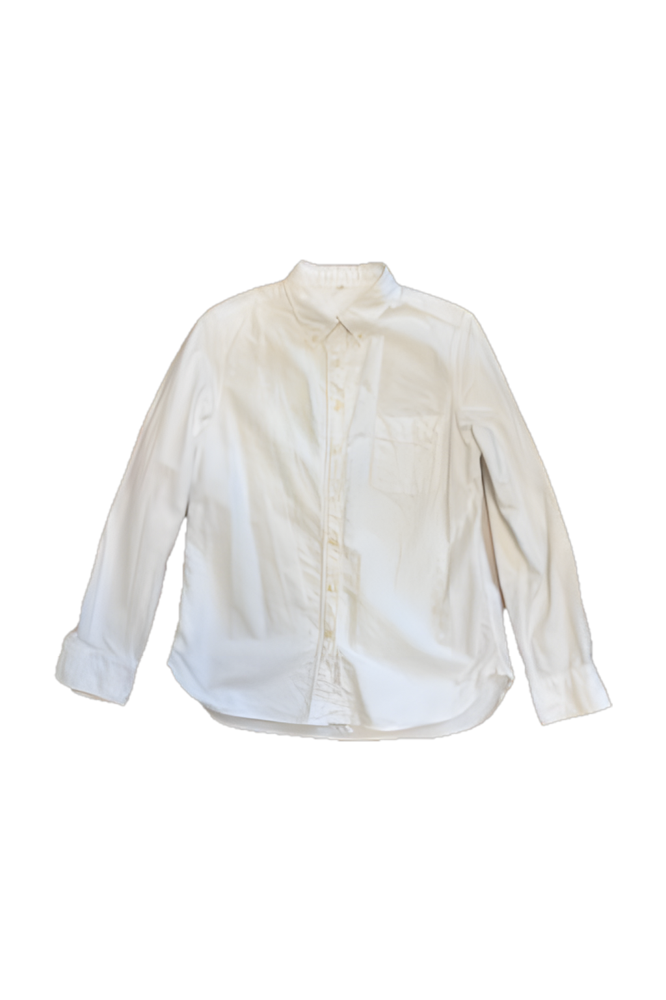
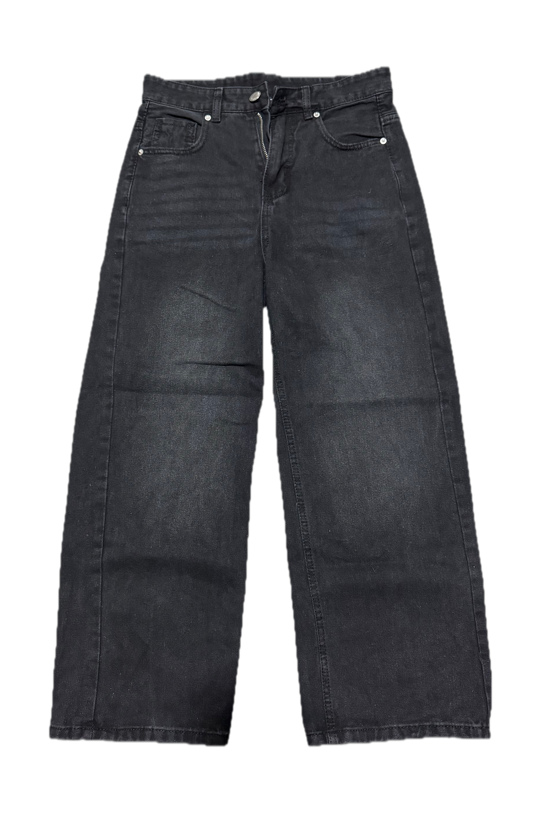
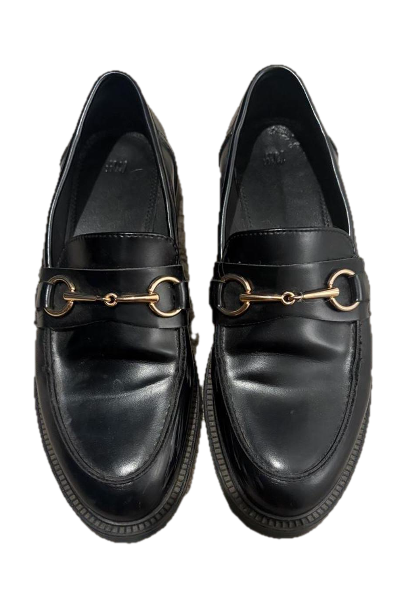
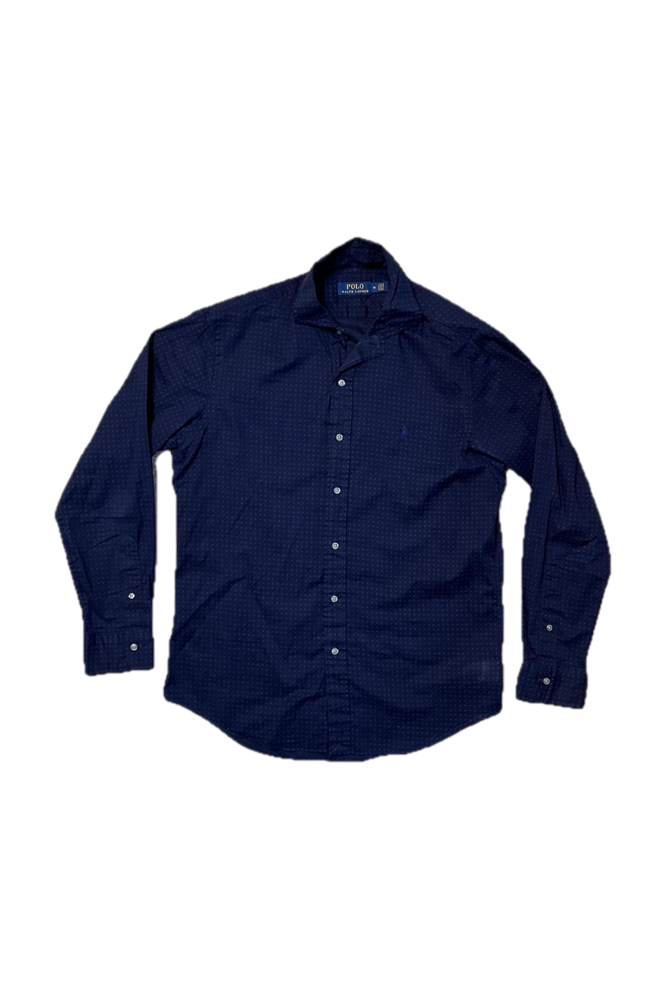
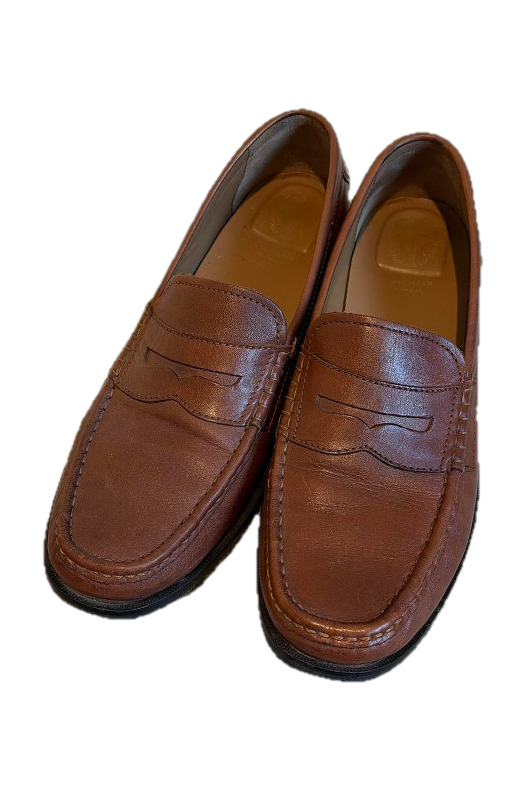
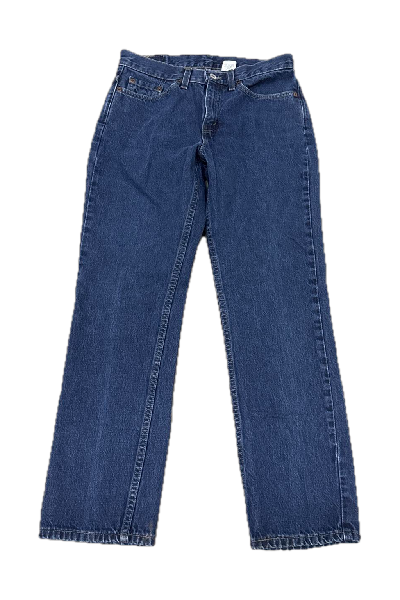

The crisp white shirt and black jeans make a clean, understated combination for prom. Black loafers keep it polished; add a belt and tuck in the shirt for a sharper finish.


Dark blue with black feels sleek, while the brown loafers add a warm contrast. The dotted shirt brings a little personality without overpowering the look.

A white shirt and blue jeans create a fresh, classic pairing, with brown loafers making it feel dressier. Tuck in the shirt and add a belt to elevate this more relaxed option.